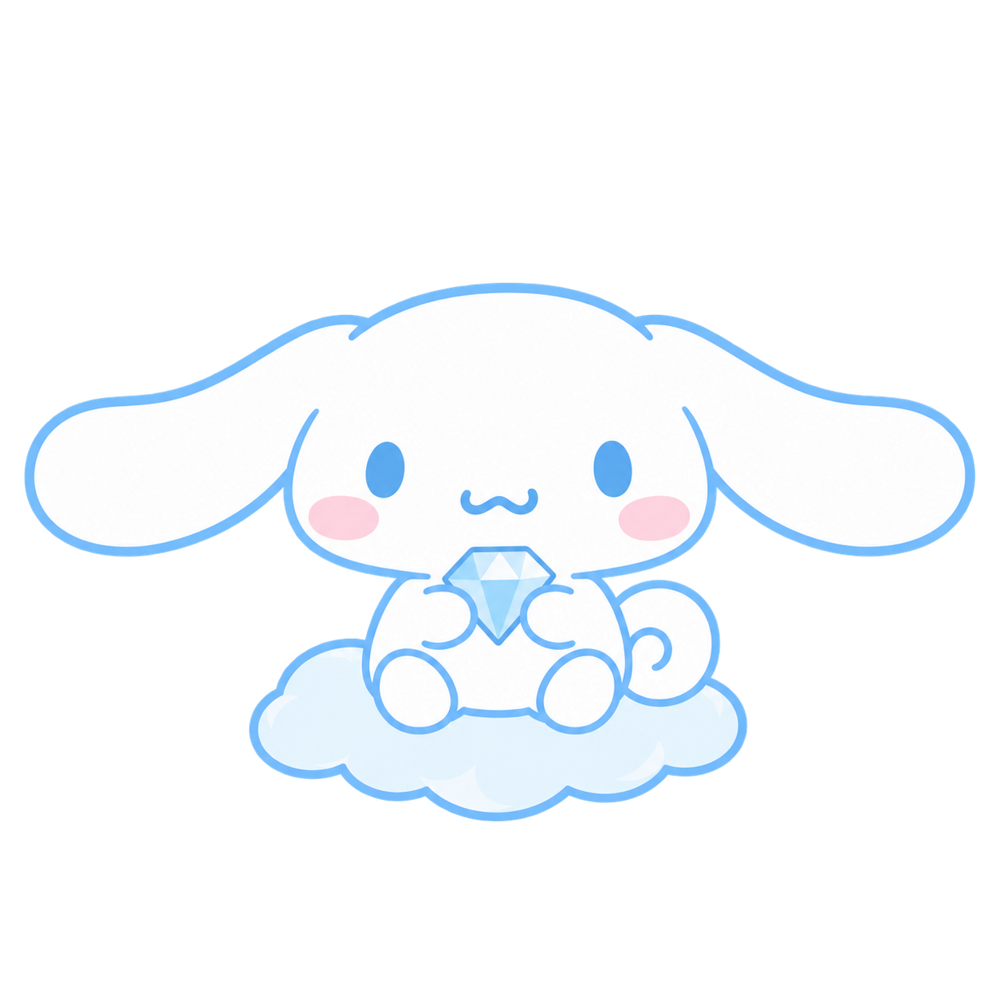
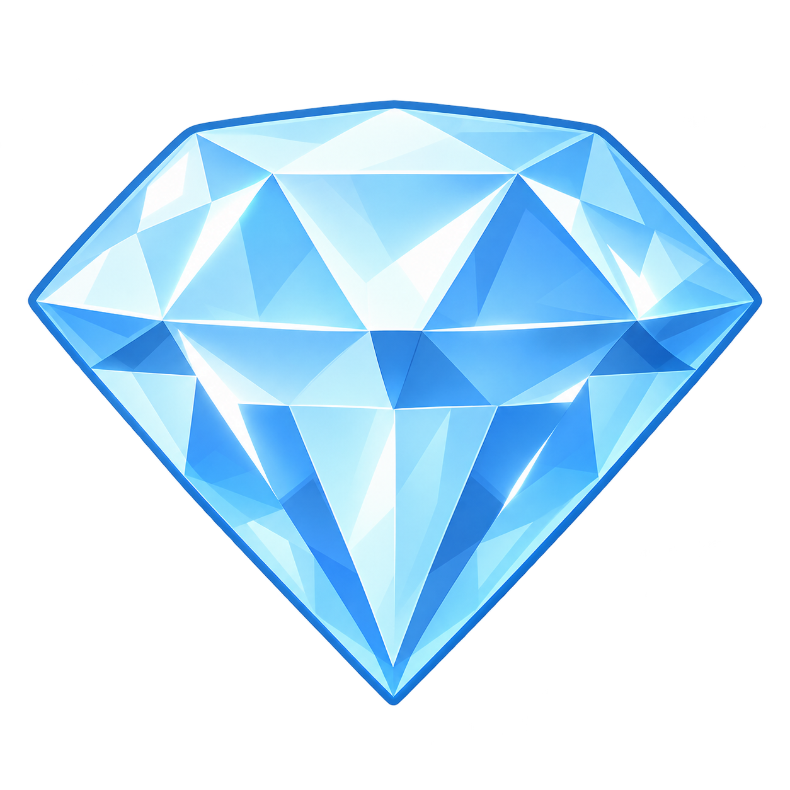
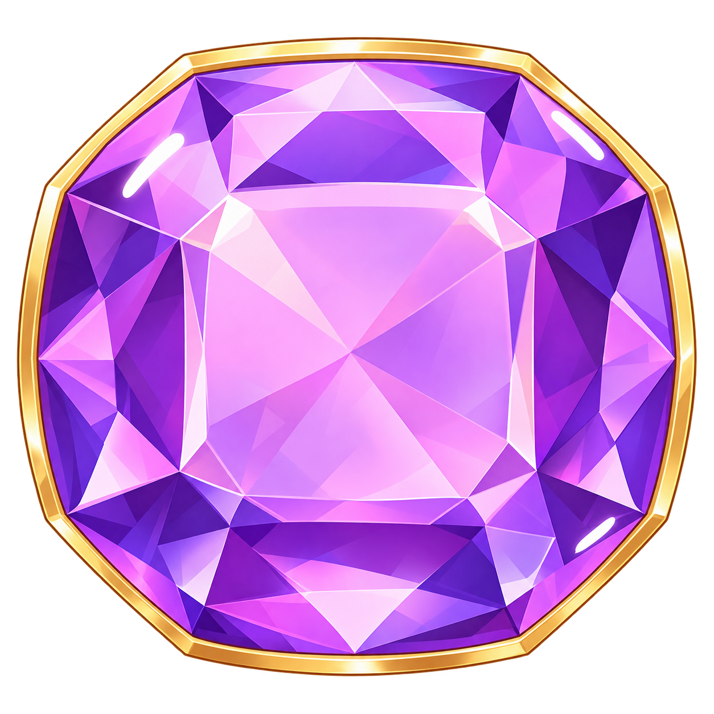
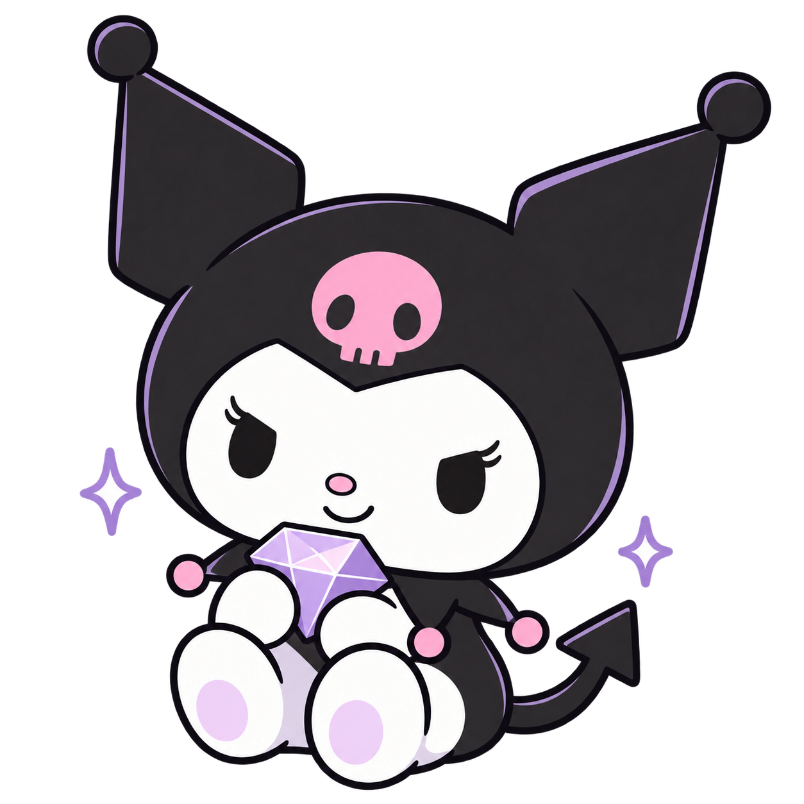

10월 4일 · 일요일오늘도
구름처럼 가볍게!
오늘도
한 걸음 ✨
구름처럼 가볍게!
오늘의 할 일 1 / 2
☑책 읽기
☐가방 챙기기
차곡차곡 모은 보석
12 개

10개보석
2개큰 보석오늘 시간표 내 보석
10월 4일 · 일요일오늘도
나답게 반짝이는 하루!
오늘도
한 걸음 ✨
나답게 반짝이는 하루!
오늘의 할 일 1 / 2
☑책 읽기
☐가방 챙기기
차곡차곡 모은 보석
12 개
10개보석
2개큰 보석
오늘 시간표 내 보석